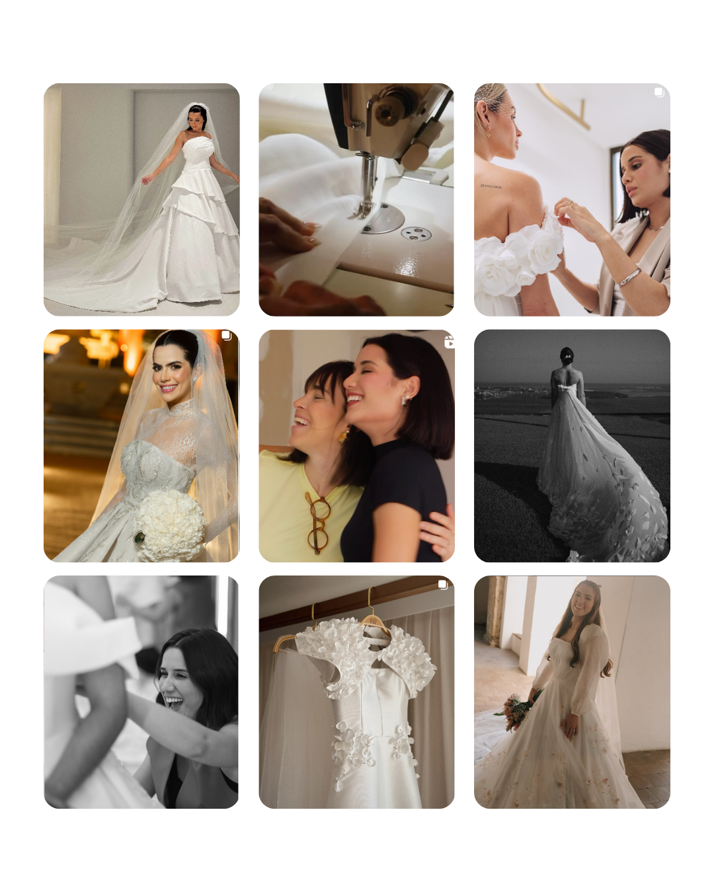
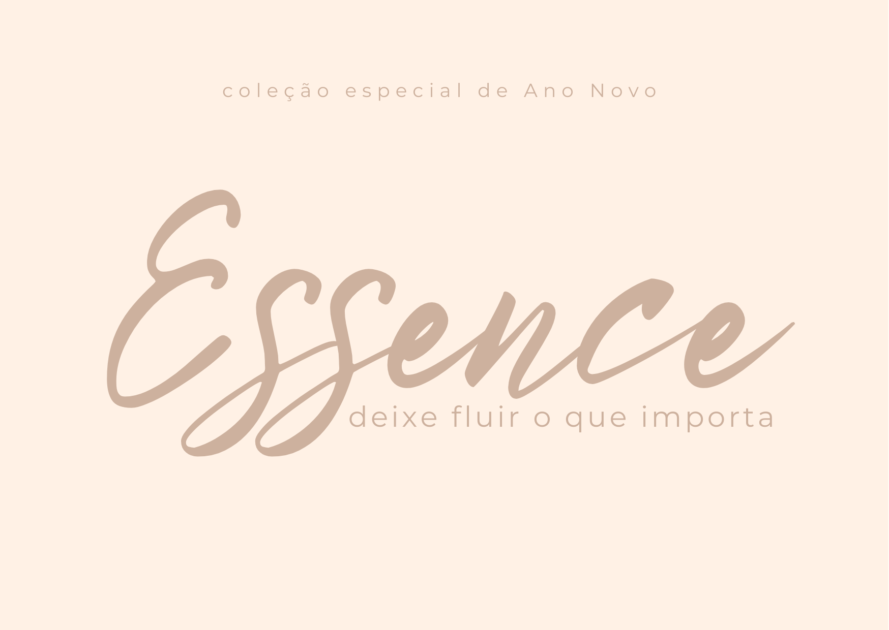
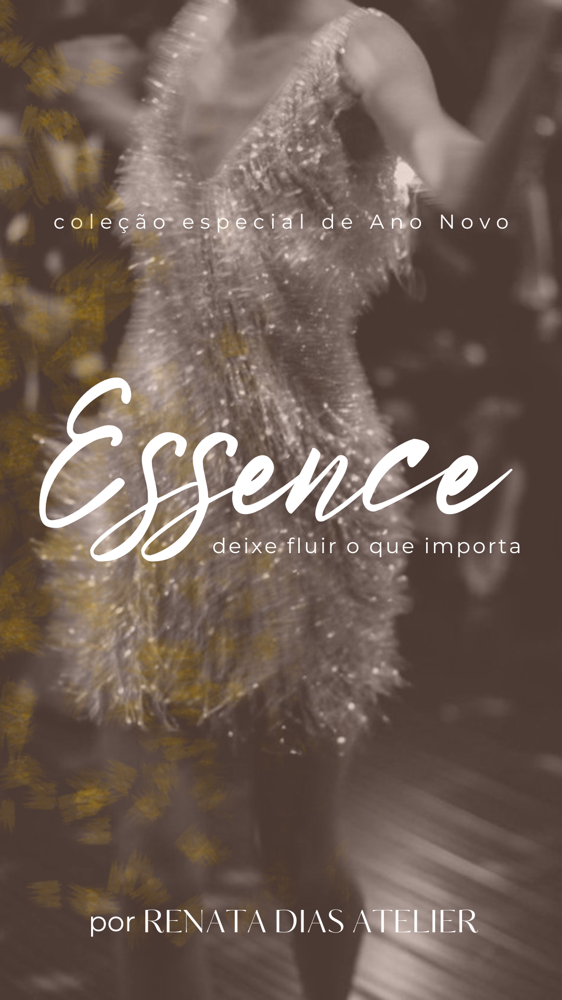

Renata Dias Atelier
Moda Noiva & Festa | Construção de marca completa
Como transformei uma marca artesanal fragmentada em uma presença digital coerente. Da identidade visual ao lançamento de coleção.

O Renata Dias Atelier é um ateliê de vestidos de noiva e festa sob medida com 10 anos de trajetória. Apesar da qualidade excepcional do trabalho artesanal, a marca da estilista e do ateliê existiam de forma desconectada. Sem identidade visual unificada, sem estratégia de conteúdo, e sem presença digital que traduzisse a exclusividade do atendimento personalizado.
O risco: continuar invisível no digital enquanto concorrentes com menos qualidade dominavam as redes sociais do segmento.
Assumi a responsabilidade completa pela presença digital. Do planejamento estratégico à execução. O primeiro passo foi mapear o posicionamento: entender o que tornava o ateliê único (design autoral, exclusividade, atendimento personalizado) e traduzir isso em linguagem visual e verbal para o digital.
Desenvolvi o planejamento e gerenciamento das redes sociais, produzi conteúdo visual e audiovisual (fotos, videos curtos, captação e edição), criei roteiros e direção de estilo para vídeos institucionais, e escrevi todas as legendas com tom alinhado à marca.
O ponto alto foi a coleção "Essence". Criei o conceito completo do zero: naming, identidade gráfica da coleção, produção visual (imagens e textos), e toda a comunicação de lançamento. O tema "deixe fluir o que importa" conectava a essência da marca com as emoções das noivas.
Antes
Marca da estilista e do ateliê desconectadas. Presença digital fragmentada, sem identidade visual. Conteúdo publicado sem direção estratégica. Coleções lançadas sem conceito visual.
Depois
Marca integrada com identidade visual coerente em todos os canais. Coleção "Essence" lançada com conceito, naming e identidade próprios. Vídeos institucionais com roteiro e direção profissional. Narrativa de marca alinhada do feed ao stories.
Resultados


Marcas artesanais precisam de comunicação que respeite a essência do trabalho manual. A tentação é "modernizar" demais. Mas o diferencial está justamente na autenticidade. O papel do marketing é amplificar o que já é real, não inventar uma imagem.